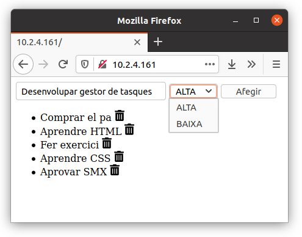

<meta charset="utf-8">
<meta name="viewport" content="width=device-width, initial-scale=1">
<script src="https://cdn.jsdelivr.net/npm/clipboard@2.0.6/dist/clipboard.min.js"></script>
<script type="module" src="/sofi/js/script.js"></script>
<link rel="stylesheet" href="/sofi/css/estil.css">

<nav></nav>

<header>
    <h1>Web Tasks</h1>

    <abstract>
        En aquesta activitat desenvolupareu una aplicació web que consisteix en un gestor de tasques.

    </abstract>
</header>

<section>
    <h2>Prepara el servidor</h2>

    <p>Necessitaràs tenir preparat un contenidor amb aquests paquets de software instal·lats:</p>
    <ul>
        <li><w>apache2</w>: El servidor web Apache</li>
        <li><w>php</w>: el motor PHP per a executar scripts.</li>
        <li><w>mysql-server</w>: el motor de base de dades MySQL</li>
        <li><w>php-mysql</w>: extensió per accedir a la base de dades des d'un script PHP</li>
    </ul>

    <p>Hauràs de connectar la carpeta <w>/var/www/html</w> del contenidor amb una carpeta del teu ordinador. 
    Així, podràs editar els arxius del contenidor des del teu ordinador utilitzant VSCode.</p>
</section>

<section>
    <h2>Pàgina estàtica</h2>
    <p>Comença el desenvolupament de l'aplicació creant una versió estàtica. Aquesta versió t'ajudarà a veure què 
        és el que s'ha d'aconseguir. Després desenvoluparàs la versió dinàmica basant-te en aquest prototip estàtic.
    </p>

    <p>Crea un arxiu <file>index.html</file> i desenvolupa el prototip estàtic. Aquest prototip no funcionarà, però 
    et servirà de guia per veure com ha de ser el resultat final.</p>

    <p>La pàgina haurà de tenir:</p>
    <ul>
        <li>
            <p>Un formulari amb:</p>
            <ul>
                <li>un camp per a escriure la descripció de la tasca</li>
                <li>un desplegable per a seleccionar la prioritat (ALTA o BAIXA)</li>
                <li>un botó per a afegir la tasca</li>
            </ul>
        </li>
        <li>
            <p>Una llista que mostri les tasques. Cada tasca de la llista ha de tenir:</p>
            <ul>
                <li>La seva descripció</li>
                <li>Una icona per a eliminar-la</li>
                <li>Un color de fons distint segons la seva prioritat</li>
            </ul>
        </li>
    </ul>

    <h3>Elements HTML</h3>
    <p>Comença escrivint primer el codi HTML. Després posaràs l'estil (colors, tamanys) amb CSS.</p>
    <p>El resultat hauria de ser una cosa semblant a aquesta:</p>
    

    <p>Formulari:</p>
    <ul>
        <li><p>Per a crear el formulari has d'utilitzar l'element <w>&lt;form&gt;</w></p>
        <li><p>Per al camp de text utilitza l'element <a href="https://www.w3schools.com/html/tryit.asp?filename=tryhtml_elem_input"><m>&lt;input&gt;</m> <ic>&#xf35d;</ic></a></p>
        <li><p>Per al desplegable utilitza l'element <a href="https://www.w3schools.com/html/tryit.asp?filename=tryhtml_elem_select_size"><m>&lt;select&gt;</m> <ic>&#xf35d;</ic></a></p>
        <li><p>Per al botó utilitza l'element <w>&lt;input type="submit"&gt;</w></p>    
    </ul>

    <p>Llista:</p>
    <ul>
        <li><p>Per a crear la llista has d'utilitzar l'element <a href="https://www.w3schools.com/html/tryit.asp?filename=tryhtml_lists_unordered"><m>&lt;ul&gt;</m> <ic>&#xf35d;</ic></a></p></li>
        <li><p>Per a fer enllaços has amb imatges d'utilitzar conjuntament els elements <a href="https://www.w3schools.com/html/tryit.asp?filename=tryhtml_links_image"><m>&lt;a&gt;</m> i <m>&lt;img&gt;</m> <ic>&#xf35d;</ic></a></p></li>
    </ul>

    <h3>Queries</h3>
    <p>El següent pas és comprovar que les accions d'afegir i eliminar posen les dades correctes a la query, ja que aquestes 
        dades després les utilitzarà el servidor. És clar, que de moment aquestes accions no funcionaran, però ho faran quan
        programis el servidor.
    </p>

    <p>Quan l'usuari prem el botó "Afegir", a la query s'han de posar la descripcio i la prioritat de la tasca. La query 
        hauria de quedar semblant a aquesta: <w>?afegir=Fer exercici&prioritat=ALTA</w> (en lloc de "Fer exercici" i "ALTA", 
        haurien de ser els valors que l'usuari introdueixi al formulari).
    </p>

    

    <p>Quan l'usuari prem l'enllaç d'eliminar, a la query s'ha d'afegir la tasca que s'ha d'eliminar. 
        És important que a aquesta dada li posem un nom diferent per a distingir-la de la dada que utilitzem per a afegir.
        La query per a eliminar una tasca podria quedar així: <w>?eliminar=Fer exercici</w> (en lloc de "Fer exercici", hauria de
        ser la descripció de la tasca corresponent).
    </p>

    

    <h3>Estil CSS</h3>
    <p>El següent pas és crear el codi CSS que ens permeti veure en diferents colors les tasques segons la seva prioritat.</p>

    <p>Hauràs de crear dues classes CSS distintes, una per a la prioritat ALTA i una altra per a la BAIXA.
        Als elements de classe ALTA se'ls posarà un color de fons, i 
        als de classe BAIXA se'ls posarà un altre color diferent.
    </p>
    <ul>
        <li>
            <p>Per a crear classes CSS has de posar un punt i després el nom de classe. A dintre de les claus has de posar 
            les propietats que s'aplicaran als elements HTML que tinguin aquesta classe.</p>

            <sc css>
                .nom-de-la-classe {
                    propietats
                }
            </sc>
        </li>
        <li>
            <p>Per a assignar classes als elements HTML utilitza l'atribut <w>class</w> amb el nom de la classe que li vulguis
            assignar:</p>
            <sc html>
                &lt;element class="nom-de-la-classe"&gt;
            </sc>
        </li>
        <li><p>La propietat CSS per a canviar el color de fons és <a href="https://www.w3schools.com/cssref/pr_background-color.asp"><m>background-color</m> <ic>&#xf35d;</ic></a></p></li>
    </ul>

    <p>Exemple: </p>
    <sc html>
        &lt;style&gt;
            .classe-exemple-1 {
                background-color: red;
            }

            .classe-exemple-2 {
                background-color: green;
            }
        &lt;/style&gt;

        &lt;p class="classe-exemple-1"&gt;Aquest text es veu en fons red&lt;/p&gt;
        &lt;p class="classe-exemple-2"&gt;Aquest text es veu en fons green&lt;/p&gt;
    </sc>

    <p>Per ultim pots canviar el tamany de les imatges amb la propietat <a href="https://www.w3schools.com/cssref/pr_dim_width.asp"><m>width</m> <ic>&#xf35d;</ic></a> i pots donar una mica d'espai als 
    elements de la llista amb les propietats <a href="https://www.w3schools.com/cssref/pr_margin.asp"><m>margin</m> <ic>&#xf35d;</ic></a> i <a href="https://www.w3schools.com/cssref/pr_padding.asp"><m>padding</m> <ic>&#xf35d;</ic></a>.</p>

    <p>Exemple:</p>
    <sc css>
        .icona {
            width: 1em;
        }

        .tasca {
            margin: 1em;
            padding: .5em;
        }
    </sc>

    <p>Després d'aplicar el CSS, la pàgina hauria de quedar semblant a aquesta:</p>

    
</section>

<section>
    <h2>Pàgina dinàmica</h2>
    <p>Per a fer la pàgina dinàmica l'hauràs de desenvolupar amb PHP i utilitzar MySQL per a guardar les tasques.</p>

    <h3>Base de dades</h3>
    <p>El primer pas serà crear la base de dades.</p>
    <p>Utilitza la comanda <w>mysql -e</w> per a executar les accions sobre la base de dades.</p>

    <shell>
        mysql -e "<replace>ACCIO_A_REALITZAR</replace>"
    </shell>

    <p>Realitza les següents accions:</p>
    <ul>
        <li>
            <p>Crea la base de dades:</p>
            <sc sql>
                CREATE DATABASE <replace>nom_base_de_dades</replace>
            </sc>
        </li>
        <li>
            <p>Crea un usuari per a administrar la base de dades:</p>
            <sc sql>
                CREATE USER '<replace>nom_usuari_admin</replace>'@'localhost' IDENTIFIED BY '<replace>password_usuari_admin</replace>'
            </sc>
        </li>
        <li>
            <p>Dona privilegis a l'usuari per a administrar la base de dades:</p>
            <sc sql>
                GRANT ALL PRIVILEGES ON <replace>nom_base_de_dades</replace>.* TO '<replace>nom_usuari_admin</replace>'@'localhost'; FLUSH PRIVILEGES
            </sc>
        </li>
    </ul>

    <p>Un cop creada la base de dades, crearem una taula per a guardar les tasques. Cada tasca es guardarà en una fila de la taula.
        Aquesta taula tindrà dos camps: descripció i prioritat.</p>
    
        
    <p>Per a crear una taula utilitza la següent sentència SQL:</p>

    <sc sql>
        CREATE TABLE <replace>nom_base_de_dades</replace>.<replace>nom_taula</replace>(<replace>camp1</replace> TEXT, <replace>camp2</replace> TEXT)
    </sc>

    <p>Pots afegir unes tasques <em>de prova</em> a la taula (per veure que funciona correctament) amb aquesta sentència:</p>

    <sc sql>
        INSERT INTO <replace>nom_base_de_dades</replace>.<replace>nom_taula</replace> VALUES ('<replace>valor camp 1</replace>','<replace>valor camp2</replace>')
    </sc>

    <p>Per consultar les tasques que hi ha la taula ho pots fer amb: </p>

    <sc sql>
        SELECT * FROM <replace>nom_base_de_dades</replace>.<replace>nom_taula</replace>
    </sc>

    <p>Per a eliminar <strong>totes</strong> les tasques de la taula:</p>
    <sc sql>
        DELETE FROM <replace>nom_base_de_dades</replace>.<replace>nom_taula</replace>
    </sc>

    <p>Per a eliminar les tasques de la taula que tinguin un valor determinat en un camp:</p>
    <sc sql>
        DELETE FROM <replace>nom_base_de_dades</replace>.<replace>nom_taula</replace> WHERE <replace>camp</replace> = '<replace>valor</replace>'
    </sc>


    <h3>Script PHP</h3>
    <p>L'últim pas en el desenvolupament de l'aplicació és programar l'script PHP per a que interactuï amb la base de dades, 
        és a dir, que obtingui les tasques, o les insereixi/elimini en funció dels paràmetres de la query.
    </p>

    <p>En els arxius PHP pots mesclar codi HTML i codi PHP. El codi PHP l'has de posar entre les marques <w>&lt;?php</w> i <w>?&gt;</w>.
    El codi HTML serà estàtic, i el codi PHP pot ser dinàmic.</p>

    <p>Per a <em>volcar</em> codi HTML des del codi PHP, has d'utilitzar la sentència <w>echo</w> i posar entre cometes el que vols <em>volcar</em>.</p>

    <p>Per exemple:</p>

    <sc php>
        &lt;h1&gt;El contingut HTML és estàtic.&lt;/h1&gt;

        &lt;?php
        echo "&lt;h1&gt;Amb PHP podem volcar contingut dinàmic&lt;/h1&gt;";
        ?&gt;
    </sc>

    <p>Per a obtenir dades de la query des del codi PHP, hem d'utilitzar <w>$_GET</w>, posant el nom de la dada així: <w>$_GET['<replace>nom_dada</replace>']</w>.</p>

    <p>Per exemple, si volem imprimir la dada <w>missatge</w> d'aquesta query <w>?missatge=hola</w>, ho podem fer així:</p>

    <sc php>
        &lt;?php
        echo "&lt;h1&gt;";              // &lt;h1&gt;
        echo $_GET['missatge'];   // hola
        echo "&lt;/h1&gt;";             // &lt;/h1&gt;
        ?&gt;
    </sc>

    <p>Si posem el <w>$_GET</w> entre cometes <w>" "</w> li hem d'afegir unes claus <w>{ }</w> així: <w>${_GET['<replace>nom_dada</replace>']}</w>:</p>

    <sc php>
        &lt;?php
        echo "&lt;h1&gt;${_GET['missatge']}&lt;/h1&gt;";   // &lt;h1&gt;hola&lt;/h1&gt;
        ?&gt;
    </sc>

    <sc php>
        $db = new mysqli("localhost", "<replace>nom_usuari_admin</replace>", "<replace>password_usuari_admin</replace>", "<replace>nom_base_de_dades</replace>");
    </sc>

    <sc php>
        $stmt = $db-&gt;prepare("INSERT INTO <replace>nom_taula</replace> VALUES(?,?)");
        $stmt-&gt;bind_param("ss", $_GET['<replace>nom_dada1_query</replace>'], $_GET['<replace>nom_dada2_query</replace>']);
        $stmt-&gt;execute();
    </sc>

    <sc php>
        $stmt = $db-&gt;prepare("DELETE FROM <replace>nom_taula</replace> WHERE <replace>camp</replace> = ?");
        $stmt-&gt;bind_param("s", $_GET['<replace>nom_dada_query</replace>']);
        $stmt-&gt;execute();
    </sc>

    <sc php>
        foreach ($db-&gt;query("SELECT * FROM <replace>nom_taula</replace>") as $fila) {
            $fila['<replace>camp</replace>']
            "${fila['<replace>camp</replace>']}"             
        }
    </sc>
</section>